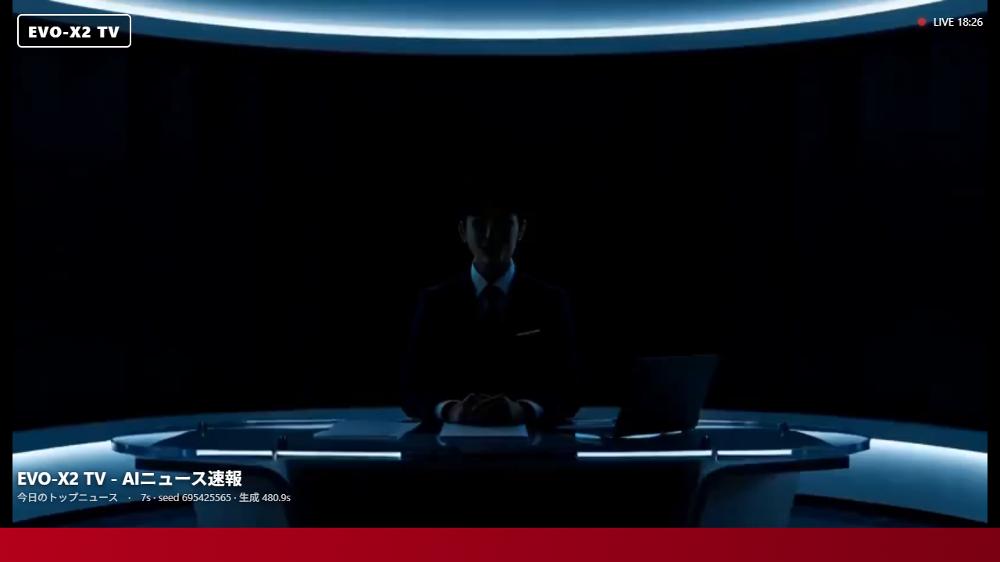

テクノエッジ 2026/09/06 の松尾公也氏の記事（RTX 5090 で MiniMax H3 を高速化）を、NVIDIA GPU の無い AMD Strix Halo ミニPC・Windows 11 で再現し、さらにローカル LLM と組み合わせた「AIテレビ局」まで動かした記録。
| PC | GMKtec NucBox EVO-X2 |
|---|---|
| APU | AMD Ryzen AI MAX+ 395 (16C/32T) / Radeon 8060S iGPU, gfx1151 (RDNA 3.5, 40 CU) |
| メモリ | 128 GB LPDDR5x — BIOS で 96 GB を iGPU 専用 VRAM に割当（Windows 側 32 GB） |
| OS | Windows 11-10.0.26200-SP0 |
| GPU ドライバ | AMD 32.0.31041.1004（2026-08-17, Adrenalin 26.8 系） |
| Python | 3.12.10（uv 管理の venv） |
| PyTorch | 2.11.0+rocm7.13.0 (HIP 7.13.99004) ← repo.amd.com/rocm/whl/gfx1151/ |
| ComfyUI | v0.35.0 + comfy-kitchen 0.2.33（hip バックエンド: int8_linear / sol_attn / adaln） |
| モデル | Comfy-Org/MiniMax-H3: fl2va & ref2va pruned int8_convrot (21 GB each), Qwen3-VL-32B int8_convrot TE (27 GB), video VAE fp16, audio VAE fp32, turbo LoRAs |
| 起動フラグ | --highvram --bf16-unet --use-ck-attention --disable-pinned-memory --reserve-vram 2 |
uv venv .venv --python 3.12 --seed
.\.venv\Scripts\python.exe -m pip install --index-url https://repo.amd.com/rocm/whl/gfx1151/ ^
"torch==2.11.0+rocm7.13.0" "torchvision==0.26.0+rocm7.13.0" "torchaudio==2.11.0+rocm7.13.0"git clone --depth 1 --branch v0.35.0 https://github.com/comfyanonymous/ComfyUI.git pip install -r ComfyUI\requirements.txt # torch 行を除いて入れ、AMD index から torch を再インストール
.\scripts\download_models.ps1 -Ref2VA
.\scripts\run_comfyui.ps1 # --highvram --bf16-unet --use-ck-attention --disable-pinned-memory --reserve-vram 2 .\.venv\Scripts\python.exe -m h3gen gen --prompt "..." --width 832 --height 480 --seconds 5 --steps 8
scripts/setup.ps1 が 1〜2 をまとめて実行する。h3gen は公式テンプレートと同じノードグラフ（UNETLoader → Turbo LoRA → BasicGuider / BasicScheduler(res_multistep, simple) → SamplerCustomAdvanced → VAEDecode + VAEDecodeAudio → CreateVideo 24 fps → SaveVideo）を API 形式で組み立て、WebSocket の executing イベント間隔でノード別の所要時間を記録する（記事の profile_nodes.py と同じ考え方）。
1 ステップあたりのサンプリング時間。赤が採用構成。
| mode | 解像度 | 長さ | attention | stack | TE 読込 | sampling | VAE dec | 合計 | tag |
|---|---|---|---|---|---|---|---|---|---|
| t2v | 832×480 | 124 f (5.2 s) | SDPA | ROCm 7.13 | – | 571 (71.4/step) | 59 | 636 | draft-832x480-5s |
| t2v | 832×480 | 124 f (5.2 s) | INT8 (ck) | ROCm 7.13 | – | 223 (27.8/step) | 59 | 603 | draft-832x480-5s-ckattn |
| t2v | 832×480 | 158 f (6.6 s) | INT8 (ck) | ROCm 7.13 | – | 319 (39.9/step) | 76 | 616 | news-anchor-ja-832x480-6s-ck |
| t2v | 640×352 | 124 f (5.2 s) | INT8 (ck) | ROCm 7.13 | – | 108 (13.4/step) | 29 | 142 | draft-640x352-5s-ck |
| t2v | 832×480 | 124 f (5.2 s) | INT8 (ck) | ROCm 10.0 | 26 | 273 (34.1/step) | 50 | 364 | rocm10-832x480-5s-ck-cold |
| i2v | 832×480 | 124 f (5.2 s) | INT8 (ck) | ROCm 7.13 | – | 243 (30.3/step) | 36 | 298 | i2v-anchor-continuation-832x480-5s |
| r2v | 832×480 | 158 f (6.6 s) | INT8 (ck) | ROCm 7.13 | 26 | 394 (49.2/step) | 73 | 530 | r2v-anchor-identity-voice-832x480-6s |
--use-ck-attention / ModelAttentionBackend）: comfy-kitchen の hip バックエンドが gfx1151 の WMMA を使い、pytorch SDPA（aotriton）比で 2.6 倍（71.4 → 27.8 s/step）。同一シードで画質は同等。--highvram で常駐。ピーク VRAM 約 78 GB、1 プロセスの確保上限は約 85 GB。ローカル LLM（Ollama / gemma4、CPU 実行で iGPU を H3 に譲る）が番組フォーマット（ニュース・天気・自然ドキュメンタリー・CM・料理・音楽・ステーションID）ごとに H3 形式のプロンプトを JSON で書き、h3gen が ComfyUI に投げ、ffmpeg で H.264/AAC に正規化してライブラリへ追加。Web プレイヤーは新着順に連続再生し、ffmpeg の HLS ブロードキャスタが /hls/live.m3u8 で 24 時間ストリームを流し続ける。
番組表(重み付き乱択) ─▶ LLM 台本 (JSON: title / segments[caption, seconds, prompt])
│ <d>[Japanese] …</d> を自動補正
▼
h3gen → ComfyUI (/prompt, /ws) ── 832×480 · 8-step turbo · INT8
│ ~5 分 / 6 秒クリップ
▼
ffmpeg normalize → aitv/library/*.mp4 + index.json
│
┌───────────────┴───────────────┐
▼ ▼
aitv.server :8800 (プレイヤー) aitv.hls (ffmpeg -re → HLS)
/playlist.json, /clips/… /hls/live.m3u8 (VLC / OBS / hls.js)

制作は実時間の約 1/60（6.6 秒のクリップに約 400 秒）なので、1 日回しても新作は約 25 分ぶん。放送局として止まらないことと、毎日 24 時間ぶんの新作ができることは別で、後者はこの GPU では無理。配信側は「まだ流していないクリップを新しい順に即座に流す → 無ければ直近を避けつつ新しいものほど重みを高くしたランダム選択」という並び順で、固定ループに見えないようにしている（aitv/hls.py: pick_next、プレイヤーも同じ方針）。scripts/run_station.ps1 で ComfyUI・プレイヤー・HLS・制作ループを常駐起動する（-Status / -Stop / -Restart）。
数日の連続運転を前提にコードをレビューし、確認できた不具合を直した。主なものは、HLS エンコーダが落ちたときに remux が排出先を失ってブロックし復帰処理に到達しない件、-fflags +igndts がクリップ境界以降のタイムスタンプを潰していた件（実測 71 % のフレーム。+genpts のみにして 1/24 秒刻みに復帰）、index.json の置き換えが Windows の共有違反で失敗し約 400 秒かけたクリップが索引に載らない件、HIP ハング時も /system_stats が応答するため生成が無期限に止まる件（無反応タイムアウトと /interrupt を追加）、停止スクリプトがコマンドライン部分一致で無関係なプロセスまで落としていた件。詳細は docs/aitv.md。
[aitv] writer LLM: gemma4:latest @ http://127.0.0.1:11434 [aitv] === AIニュース: EVO-X2 TV - AIニュース速報 (3 seg) [aitv] + news-20260910-182422-72da74.mp4 (6.6s clip, rendered in 481s, sampling 351s) 「今日のトップニュース」 [aitv] + news-20260910-183059-58a8f3.mp4 (6.6s clip, rendered in 397s, sampling 314s) 「革新的エネルギー技術」 [aitv] + news-20260910-183736-d7608d.mp4 (6.6s clip, rendered in 396s, sampling 314s) 「地域の緑化活動」 [aitv] === CM: オーロラベリーブースト CM (1 seg) [aitv] + cm-20260910-184522-64ba79.mp4 (6.6s clip, rendered in 399s, sampling 316s) 「太陽とベリーの魔法！」 [aitv] === ステーションID: Station Ident: EVO-X2 TV (1 seg) [aitv] + ident-20260910-185023-9ef62c.mp4 (4.5s clip, rendered in 238s, sampling 183s) 「EVO-X2 TV ローカルAI放送局」
| 番組 | キャプション（ティッカー） | 長さ | 生成 | LLM が書いたプロンプト（冒頭） |
|---|---|---|---|---|
| EVO-X2 TV - AIニュース速報 | 今日のトップニュース | 6.6 s | 481 s | integrated_multimodal_description: [Shot 1] <ultra-modern, cool tones>, <medium> frames <A professional-looking, gender-neutral AI news anchor wearing a sharp suit, seated at a sleek, minimalist news desk>.<The camera pushes in with small amplitude at slow spe… |
| EVO-X2 TV - AIニュース速報 | 革新的エネルギー技術 | 6.6 s | 397 s | integrated_multimodal_description: [Shot 1] <bright, scientific, highly stylized>, <wide> frames <Abstract depiction of glowing, sustainable energy flowing through crystalline structures in a futuristic laboratory setting>.<The camera tracks left at slow speed… |
| EVO-X2 TV - AIニュース速報 | 地域の緑化活動 | 6.6 s | 396 s | integrated_multimodal_description: [Shot 1] <lush, natural, soft daytime lighting>, <full> frames <A picturesque, thriving local park filled with diverse, vibrant greenery and clean walkways>.<The camera pans right at slow speed, showing various types of ficti… |
| オーロラベリーブースト CM | 太陽とベリーの魔法！ | 6.6 s | 399 s | integrated_multimodal_description: [Shot 1] <style words>Hyper-saturated, magical realism, joyful</style>, <shot size>medium shot</shot size> frames <a stylized forest sprite, glowing slightly, holding a glowing bottle of berry juice, standing in a lush, sun-d… |
| Station Ident: EVO-X2 TV | EVO-X2 TV ローカルAI放送局 | 4.5 s | 238 s | integrated_multimodal_description: [Shot 1] neon vaporwave style, wide shot frames abstract, glowing geometric shapes rapidly assembling and rotating in deep space. The camera pushes out slowly with a small amplitude at slow speed. A friendly, bright voice (S1… |
| EVO-X2 AIニュース：未来を照らす発見 | こんばんは。今夜もAIがお届けするニュースの時間です。 | 6.6 s | 394 s | integrated_multimodal_description: [Shot 1] Professional middle-aged anchor with a calm, trustworthy expression, wearing a sharp dark suit, seated at a sleek, modern news desk made of polished stone. The background features abstract blue and white digital ligh… |
| EVO-X2 AIニュース：未来を照らす発見 | 環境技術の革命！自己修復コンクリートの実用化が加速。 | 6.6 s | 400 s | integrated_multimodal_description: [Shot 1] A brightly lit, futuristic outdoor laboratory setting. Engineers in clean white uniforms are examining a sample of grey, porous concrete on a white workbench. The camera tracks slowly from the workbench up to show th… |
| EVO-X2 AIニュース：未来を照らす発見 | 地域活性化に貢献！絶滅危惧種を助けるAIカメラが導入されました。 | 6.6 s | 401 s | integrated_multimodal_description: [Shot 1] A serene, lush forested valley with sunlight dappling through the canopy. Several small, harmless, unidentified wildlife (e.g., brightly colored fictional birds) are visible in the background. The camera moves slowly… |
| 3分クッキング：ふわとろ卵焼き | 今日のメニューはふわとろ卵焼き！ | 6.6 s | 400 s | integrated_multimodal_description: [Shot 1] <bright, cheerful, cinematic>, <medium close up> frames <A friendly, middle-aged chef with a clean apron, standing in a brightly lit, modern kitchen filled with stainless steel and wooden accents>. The camera pushes … |
| 3分クッキング：ふわとろ卵焼き | 火加減と油の量がポイントです。 | 6.6 s | 404 s | integrated_multimodal_description: [Shot 1] <high contrast, warm, detailed>, <extreme close up> frames <A pair of stainless steel chopsticks carefully folding a thin layer of yellow egg mixture in a non-stick pan, resting on a marble countertop>. The camera tr… |
| エナジー・ドリンク「スパークル・シップ」CM | 日常に輝きを。 | 6.6 s | 404 s | integrated_multimodal_description: [Shot 1] Highly saturated, whimsical Studio Ghibli-esque aesthetic, Medium Shot frames a stylized, bored character (male, wearing brightly colored, loose-fitting clothes) sitting alone on a park bench during a mild, cloudy af… |
| EVO-X2 TV // Blue Hour Interlude | 青い時間帯の東京の光景 | 8.0 s | 521 s | integrated_multimodal_description: [Shot 1] Cinematic wide shot, establishing shot, frames 1-8. A futuristic Japanese city skyline viewed from a bridge, bathed in cool blue twilight tones. The camera slowly pans right, revealing the intricate glow of neon sign… |
| AIニュース：未来の発見と生活の変化 | 今夜のトップニュースです。 | 6.6 s | 398 s | integrated_multimodal_description: [Shot 1] Cinematic, high-tech news studio, medium shot frames a professional news anchor sitting behind a sleek, curved desk. The camera pushes in with a small amplitude at slow speed. The anchor, a calm-looking woman in her … |
| AIニュース：未来の発見と生活の変化 | 次世代型太陽光パネルが実用化へ。 | 6.6 s | 402 s | integrated_multimodal_description: [Shot 1] Bright, futuristic rooftop setting, wide shot frames a newly installed, glowing solar panel array. The camera tracks slowly left across the panels, revealing complex wiring. A male scientific researcher in his early … |
| AIニュース：未来の発見と生活の変化 | 地域コミュニティが植物型浄水システムを導入。 | 6.6 s | 401 s | integrated_multimodal_description: [Shot 1] Lush, overgrown botanical facility, medium shot frames a community garden fountain where water is filtering through glowing, bio-engineered moss and plants. The camera tilts down at slow speed, following the flow of … |
| 黄昏の海の調べ | 音楽ブレイク：夕暮れの海辺 | 8.0 s | 514 s | integrated_multimodal_description: [Shot 1] Cinematic establishing shot, wide angle, showing the vast ocean and a sliver of sky at dusk. The camera tracks slowly left, following the curve of the shoreline. The light is soft, deep blues and oranges. The camera … |
| 3分クッキング：ポテトグラタンの作り方 | やさしいポテトグラタンのレシピ | 6.6 s | 398 s | integrated_multimodal_description: [Shot 1] Wide shot, cinematic, 30mm lens, frames a friendly, middle-aged female chef wearing a white apron in a brightly lit, modern kitchen. The camera tracks left at slow speed, revealing fresh ingredients on a counter. The… |
| 3分クッキング：ポテトグラタンの作り方 | 失敗しないコツは耐熱容器の準備 | 6.6 s | 401 s | integrated_multimodal_description: [Shot 1] Extreme close-up, hyper-realistic, macro lens, frames steam rising from a bubbling pot of potatoes in a glass baking dish. The camera pans right slowly, following the steam. The chef, who is wearing a white apron, is… |
| フォレストの囁き：生命の共生 | 熱帯雨林の深淵 | 8.0 s | 528 s | integrated_multimodal_description: [Shot 1] Cinematic, highly detailed, wide shot frames the dense canopy of an equatorial rainforest. The camera slowly tracks laterally across massive, moss-covered tree trunks shrouded in mist. The camera pushes out with smal… |
| フォレストの囁き：生命の共生 | 水辺の営み | 8.0 s | 529 s | integrated_multimodal_description: [Shot 1] Hyper-realistic, macro shot frames a small, vibrant poison dart frog sitting on a slick, dark green leaf over a misty jungle river. The camera slowly zooms in with large amplitude at slow speed, focusing on the frog'… |
| フォレストの囁き：生命の共生 | 黄昏の交響曲 | 8.0 s | 521 s | integrated_multimodal_description: [Shot 1] Warm, ethereal, wide shot frames the rainforest canopy during golden hour, with sunlight filtering through the leaves. The camera executes a slow arc shot around a cluster of giant, flowering jungle orchids. The came… |
| 🌈レインボーバースト・ジュースCM | 毎日、彩りチャージ！ | 6.6 s | 401 s | integrated_multimodal_description: [Shot 1] Vibrant and highly saturated color grading, medium shot frames a young, stylized character (wearing simple, bright clothing) sitting at a clean, marble countertop. The character smiles while holding a bottle of brigh… |
| EVO-X2 TV AIニュース：持続可能な未来へ | 2026年9月10日 ニュースをお届けします | 6.6 s | 402 s | integrated_multimodal_description: [Shot 1] A mid-30s Japanese professional anchor, wearing a sharp navy suit, sits behind a modern, lit news desk. The background features sleek, abstract digital display panels. The camera pushes in with small amplitude at slo… |
| EVO-X2 TV AIニュース：持続可能な未来へ | 太陽光発電の新たな可能性 | 6.6 s | 404 s | integrated_multimodal_description: [Shot 1] A brightly lit, clean manufacturing facility. Close up on a robotic arm precisely spraying a shimmering, dark paint onto a large metal surface. The camera performs a slow, deliberate arc shot following the path of th… |
| EVO-X2 TV AIニュース：持続可能な未来へ | 地域活性化に向けた緑化プロジェクト | 6.6 s | 400 s | integrated_multimodal_description: [Shot 1] A sunny, tree-lined local park undergoing revitalization. Wide shot of volunteers planting saplings near a stream. The camera pans left to capture the cooperative efforts of the group. The camera tracks slowly follow… |
| EVO-X2 Station Ident: The Flow of Data | 未来を繋ぐ、ローカルAI放送局。 | 4.5 s | 245 s | integrated_multimodal_description: [Shot 1] Deep blue and electric cyan abstract geometric lattice patterns, resembling interconnected neural pathways, fill the frame. The camera tracks slowly and smoothly across the depth of the glowing structures. A bright, … |
| 都会の黄昏：ノスタルジック・インターリュード | 【22:21】City Twilight Interlude | 8.0 s | 525 s | integrated_multimodal_description: [Shot 1] Cinematic, wide-angle shot, showing a dense metropolis street during the golden hour approaching dusk. Neon lights begin to flicker on as the sky fades from orange to deep indigo. The camera tracks slowly left to rig… |
| 温かい雲のふわふわスナックCM | 寒さなんて、ふわふわで溶かして！ | 6.6 s | 404 s | integrated_multimodal_description: [Shot 1] Cinematic, highly stylized vaporwave aesthetic, medium shot frames a stylized, fashionable character wearing oversized pastel knitwear sitting on a rustic bench in a softly lit, autumnal park. The character has a sli… |
| 深淵の囁き：深海生物の営み | 夜の帳に包まれた深海の世界 | 8.0 s | 525 s | integrated_multimodal_description: [Shot 1] Cinematic, ultra-high contrast, underwater shot of a vast abyssal plain with bioluminescent flora and strange deep-sea rock formations. The camera tracks left at slow speed, revealing massive, alien structures. A dee… |
| 深淵の囁き：深海生物の営み | 光を纏う生命のドラマ | 8.0 s | 528 s | integrated_multimodal_description: [Shot 1] Mysterious, intensely glowing, underwater close-up shot focusing on several small, gelatinous bioluminescent creatures forming a cluster. The camera arcs shot slowly, moving around the group. A deep-sea siphonophore … |
| 深淵の囁き：深海生物の営み | 沈黙と共存する深海の鼓動 | 8.0 s | 531 s | integrated_multimodal_description: [Shot 1] Cinematic, grand scale, underwater panoramic shot of the abyssal plain, showing slow-moving benthic fauna and faint plumes of sediment. The camera pans right at slow speed, revealing the scale of the environment. A l… |
| EVO-X2 TV 2026年9月10日夜版ニュース | こんばんは。2026年9月10日夜のトップニュースです。 | 6.6 s | 399 s | integrated_multimodal_description: [Shot 1] Cinematic, polished news anchor desk style, medium shot frames a professional male anchor (30s, wearing a charcoal suit, calm expression) seated behind a sleek, glowing blue news desk. The camera tracks slowly left t… |
| EVO-X2 TV 2026年9月10日夜版ニュース | 【科学】次世代太陽光パネルの実用化に成功か？ | 6.6 s | 402 s | integrated_multimodal_description: [Shot 1] Bright, futuristic, clean energy research facility, wide shot frames massive arrays of geometric, iridescent solar panels under a bright sky. The camera arcs slowly from left to right, following the line of panels. A… |
| EVO-X2 TV 2026年9月10日夜版ニュース | 地域密着型イベント：公園に新しいコミュニティスペースが誕生。 | 6.6 s | 402 s | integrated_multimodal_description: [Shot 1] Sunny, sprawling modern urban park setting, medium wide shot frames diverse people enjoying a newly opened, beautifully designed community pavilion and green space. The camera tilts up slightly at slow speed, showing… |
| EVO-X2 TV Station Ident | ようこそ、EVO-X2 TVへ | 4.5 s | 240 s | integrated_multimodal_description: [Shot 1] Abstract, neon-lit motion graphics, wide shot, a glowing, amorphous 'Lumen Blob' creature that pulses with vibrant, shifting colors and energy particles. The camera arcs shot around the creature at medium speed. A wh… |
PYTORCH_HIP_ALLOC_CONF=expandable_segments:True は Windows/HIP で禁止。 94 GB 空いているのにテキストエンコーダ読込中 13〜14 GB で OOM。環境変数を二分探索して特定（scripts/vram_probe3.py）。既定アロケータなら 85 GB まで確保可。split_files/ プレフィックス無し。 diffusion_models/, text_encoders/ 直下。/view ダウンロードはローカルでは使わない。 aiohttp の sendfile が Windows で落ちる上、出力先と同じパスに書くと生成物を 0 バイトに潰す（実際にやらかした）。ローカルは出力ディレクトリを直接参照。/free → INT8 テンソルの GPU→CPU 移動でサーバごと落ちた。fl2va ↔ ref2va の切替はサーバ再起動で行う。